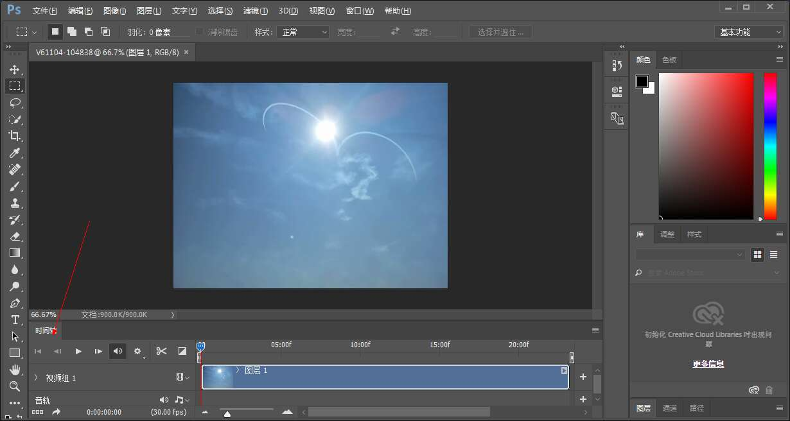
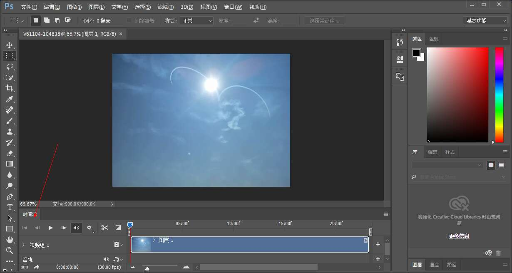
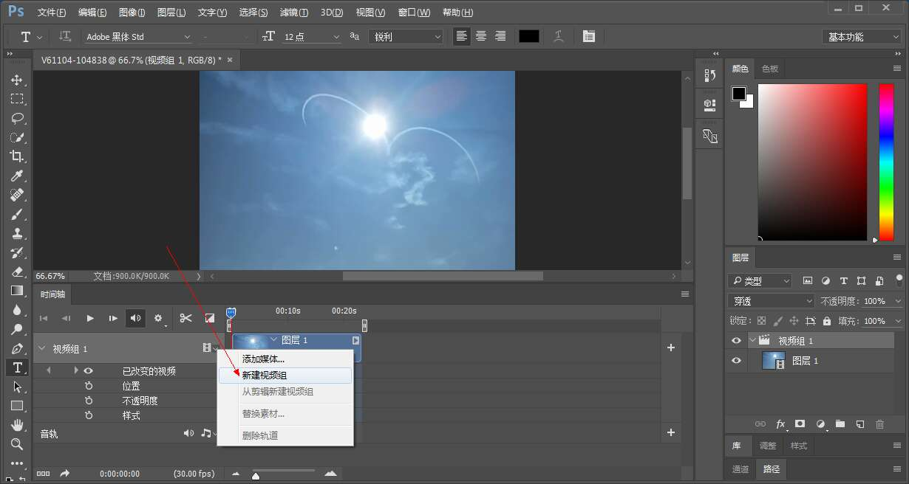
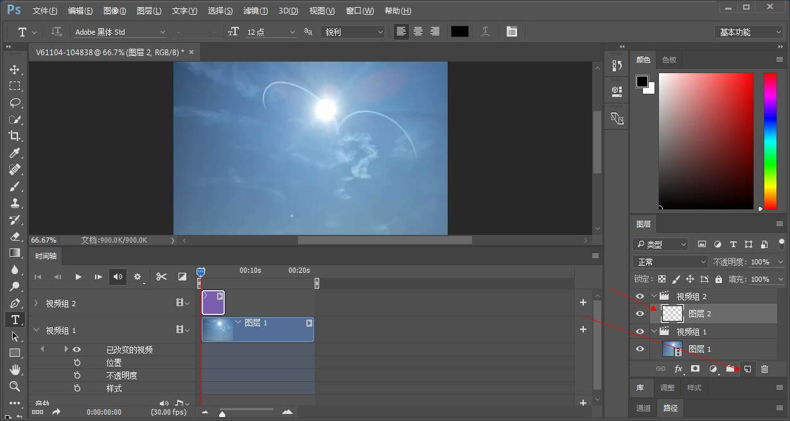
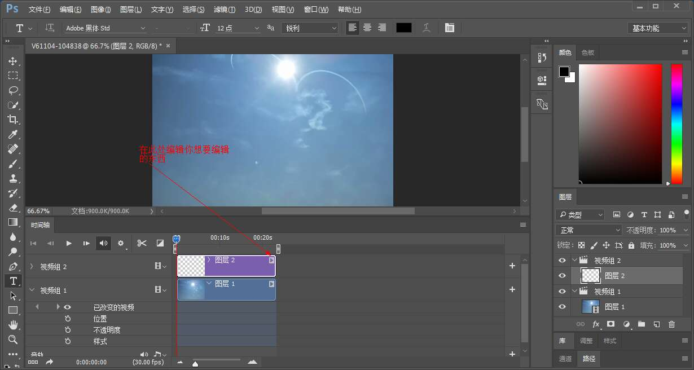
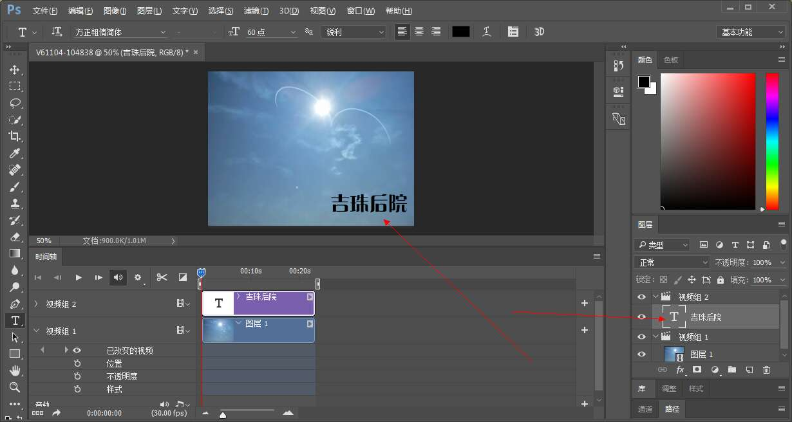
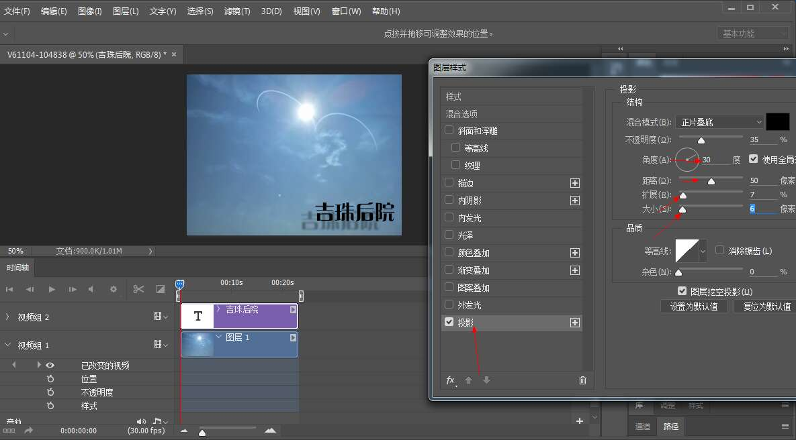
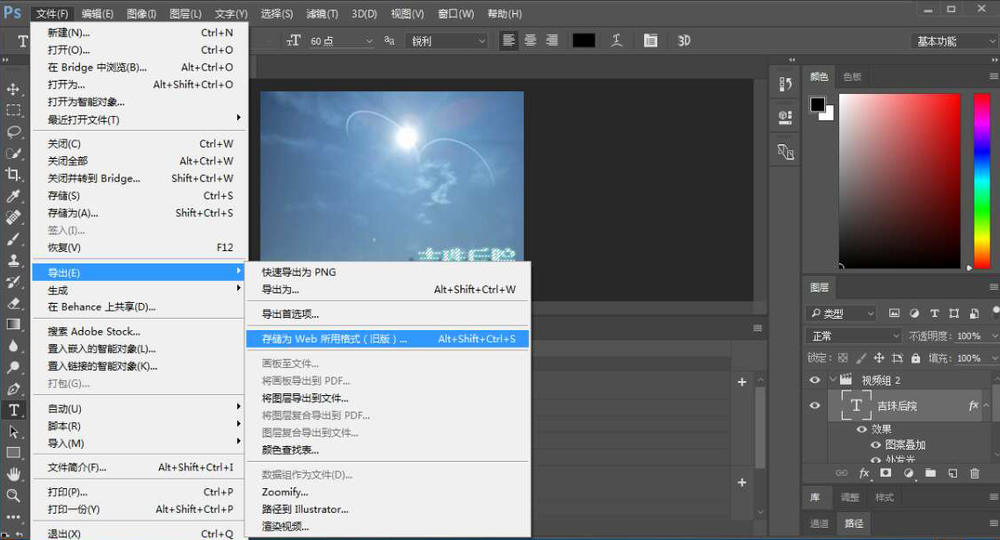
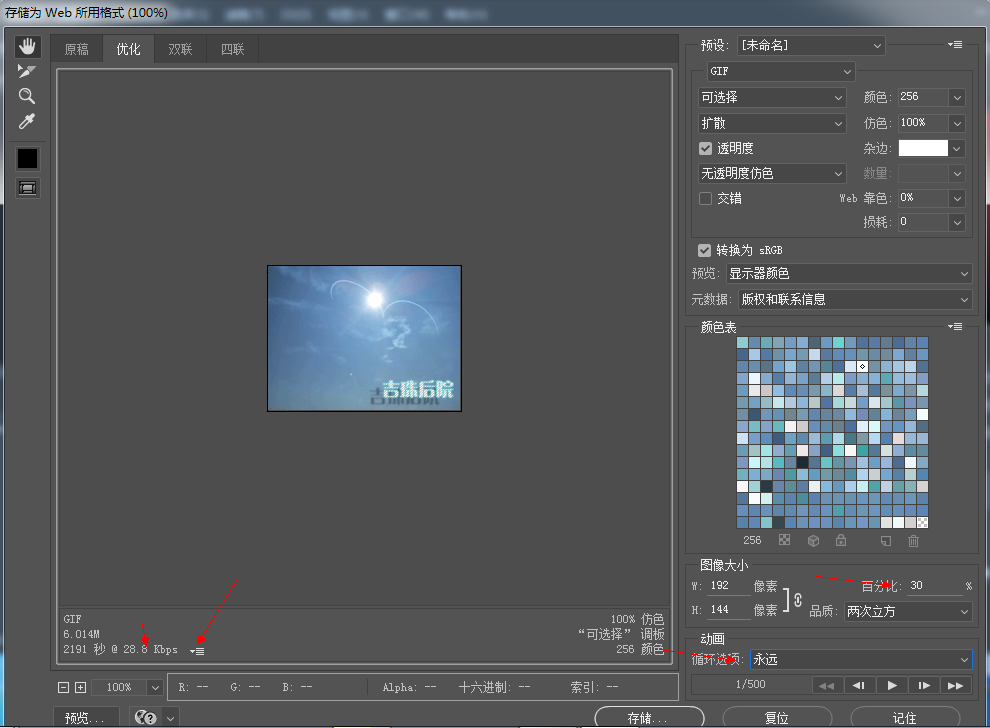

今天呢给大家带来一个制作自己拍摄的视频的GIF图，说实话这个教程还是有点难度的，并且对软件也有要求，必须是有3D功能的版本才能实现这个教程。
今天呢给大家带来一个制作自己拍摄的视频的GIF图，说实话这个教程还是有点难度的，并且对软件也有要求，必须是有3D功能的版本才能实现这个教程。
先把视屏拖进ps，也可以（建议此法，否则gif会很大）点击文件->导入->视屏帧到图层->（勾选）限制为每隔2（不一定）帧->(勾选)制作帧动画，（勾选）仅限所选范围可以截出你需要的视频起始点和结束点。
点击箭头所指位置新建视屏组
在视屏组二中添加一个空白图层
然后拖动时间轴上的视屏组二的图层
在图层二上进行编辑，编辑什么都可以哦。
双击图层2空白处添加图层样式。
最后我们为文字图层加一些图层样式，比如阴影，外发光，纹理。
最后就是导出gif格式的图片啦。
是不是很简单呢（不是），快来试试吧。
最后附上成品图